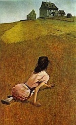
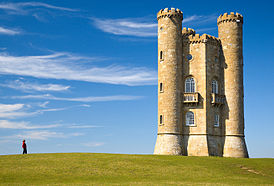

This project involves a content-aware image-resizing technique called seam carving. When reducing the size of an image, seam carving will calculate the lowest energy seams (connected strand of pixels 1 pixel wide that go through the image), and remove those first. In many cases, the lower energy seams happen to be ones with less content, and removing those seams will preserve the more important information in the original image. In a high level, it's algorithm includes the following steps:
The above algorithm is used to calculate lowest energy vertical seams, used for horizontal resizing. To resize vertically, I transposed the source image and ran the same algorithm on it, then rotated the processed image back.
Below are the results of some of my seam carving trials.
|
From 400x400 to 200x350 |
|
From 500x321 to 350x271 |
|

From 350x248 to 150x248 |
|
From 480x360 to 380x310 |
|

From 274x186 to 174x136 |
|
From 480x320 to 380x270 |
The above results all seem to be scaled down pretty well, with most of the important information existing and in proportion.
|
Mona Lisa, from 400x536 to 200x486 |
|
Kandinsky, from 400x280 to 200x230 |
These cases did not work so well. In the Mona Lisa painting, her hair was considered low energy because it consisted of vertical strands with small amounts of change. But removing the hair largely distorts the painting. In the Kandinsky image, the straight lines and shapes were distorted from the original art piece. These are some cases that the algorithm cannot produce very satisfactory results.